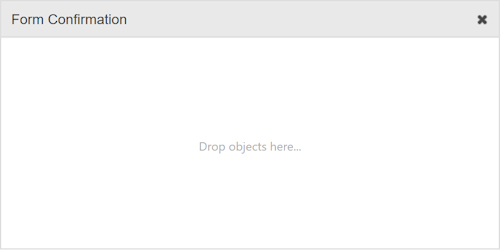

Creating a Form with a popup confirmation
Normally, the confirmation (success/error) message is displayed on another page via a PHP redirect.
However, in WYSIWYG Web Builder 15 we have added the ability to display the confirmation in a popup dialog (jQuery UI or Bootstrap) on the same page!
Note: this tutorial assumes that you are familiar with forms. If you are just getting started then please read about the basics first:
- Creating Forms
- How to use the Form Wizard?
Normally, the confirmation (success/error) message is displayed on another page via a PHP redirect.
However, in WYSIWYG Web Builder 15 we have added the ability to display the confirmation in a popup dialog (jQuery UI or Bootstrap) on the same page!
Note: this tutorial assumes that you are familiar with forms. If you are just getting started then please read about the basics first:
- Creating Forms
- How to use the Form Wizard?
Step 1
Add a dialog to the page:
Toolbox -> jQuery UI/Bootstrap -> Dialog
The dialog should not have any content, because this is loaded from the success or error page!
Add a dialog to the page:
Toolbox -> jQuery UI/Bootstrap -> Dialog
The dialog should not have any content, because this is loaded from the success or error page!

Uncheck 'Show dialog automatically', so the dialog will be initially hidden.
Step 2
Make sure 'Use built-in PHP form processor script' is checked and select a success and error page.
Step 3
Select the ID of the dialog in the form's target property.
Now, when you publish the page, all the necessary code will be generated automatically!
Make sure 'Use built-in PHP form processor script' is checked and select a success and error page.
Step 3
Select the ID of the dialog in the form's target property.
Now, when you publish the page, all the necessary code will be generated automatically!
Notes:
To prevent the user from submitting the same form again, it may be a good idea to add a (link) button to the success page which redirects the user to another page.
The content of the popup is actually an inline frame, so the success/error page does not have access to the form.
Therefor, it is not possible to clear or disable the form controls via the popup. The popup only shows the result of the form submission.
To prevent the user from submitting the same form again, it may be a good idea to add a (link) button to the success page which redirects the user to another page.
The content of the popup is actually an inline frame, so the success/error page does not have access to the form.
Therefor, it is not possible to clear or disable the form controls via the popup. The popup only shows the result of the form submission.